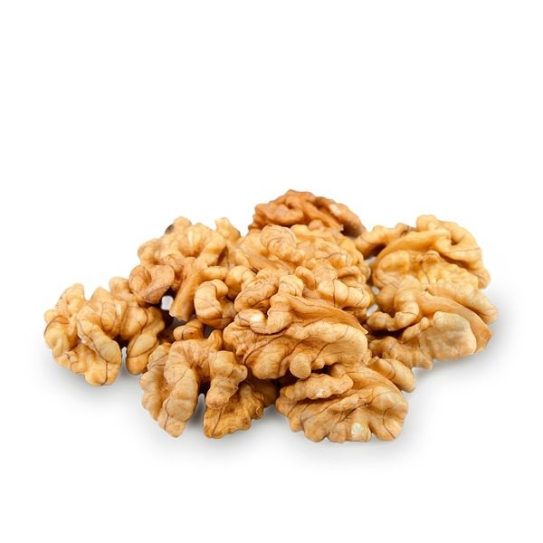

Nueces
Una nuez es el fruto de cualquier árbol del género Juglans (familia Juglandaceae), particularmente la nuez persa o inglesa, Juglans regia. Una nuez es la semilla comestible de una drupa y, por lo tanto, no es una verdadera nuez botánica. Se consume comúnmente como nuez. Después de la maduración completa de su semilla comestible cuando se ha desechado la cáscara, se usa como guarnición o snack. Las nueces del nogal negro oriental (Juglans nigra) y las nueces blancas (Juglans cinerea) se consumen con menos frecuencia.
Nuestras variedades de Nueces
Nuez mariposa extra light
Nuez cuartos extra-light
Nuez con cascara

PRECIOS
| Nuez mariposa extra light | Nuez cuartos extra light | Nuez con cascara | $1.649 | $1.327 | $1.025 |
|---|